R3-v3 · 30 October 2026 · Owner visual feedback pending
One pot first.
Then two choices.
Drag money into investments. See the opening money change, watch monthly money arrive, then compare two deposits.
What changed
- The investment column now carries its own draggable handle, with keyboard and touch support. No separate allocation slider.
- A stable, prominent forward button leads through the story. After allocation, its first action advances one year before introducing monthly investing.
- The same investment object stays on screen. Dark fill tracks opening money and its own gains or losses; dotted light fill tracks later money and its gains or losses.
- The larger-deposit example arrives after those two ideas. Its opening investment is empty; both examples then use one date and scale with different monthly contributions.
- The comparison table has left the main scene. Both choices' deposits, repayments, cash, cohort values and principal/interest breakdowns are in Details.
Normal-speed walkthroughs
Unedited 1x recordings. The mobile walkthrough uses Chromium touch emulation. Watch the handle, the forward action in context, opening growth and loss, the first contribution arriving and the second example appearing.
Desktop · 1280 × 720
Mobile emulation · 390 × 844
Teaching moments

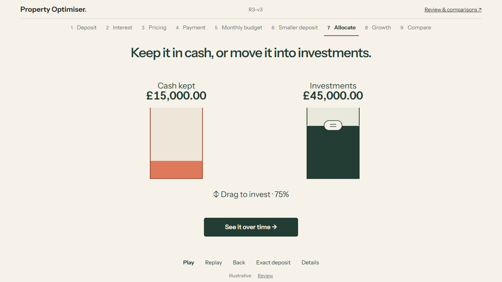

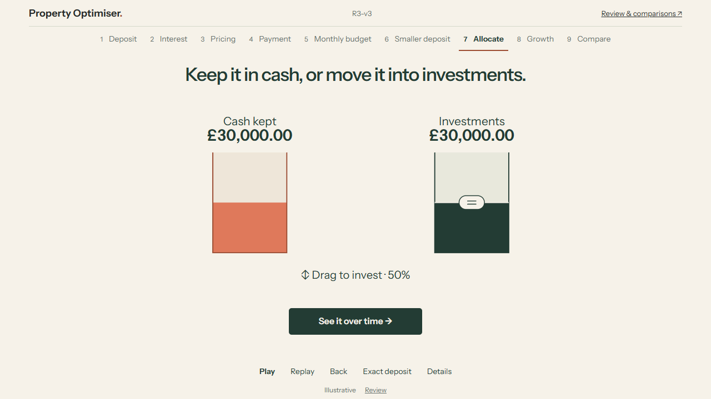

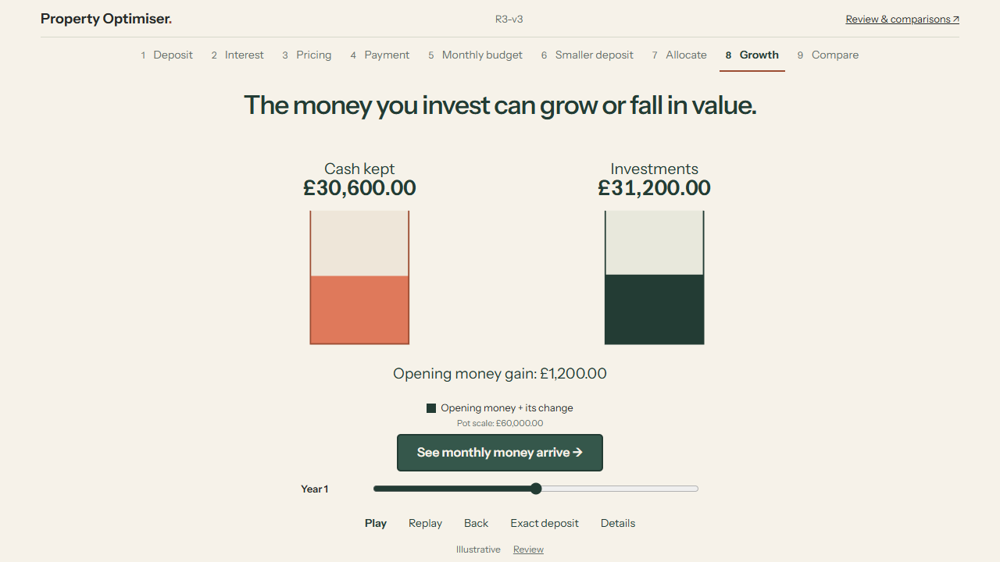

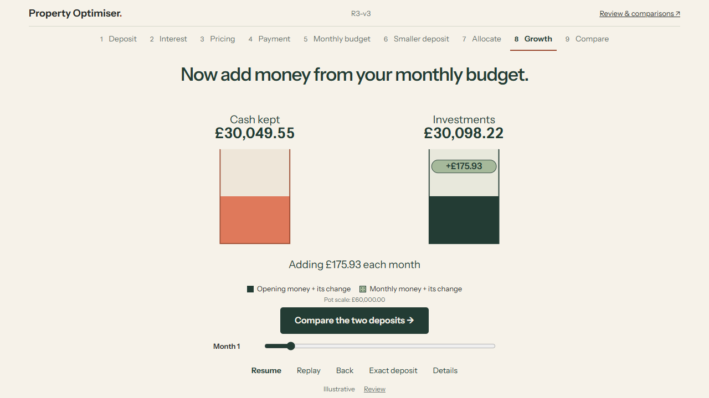

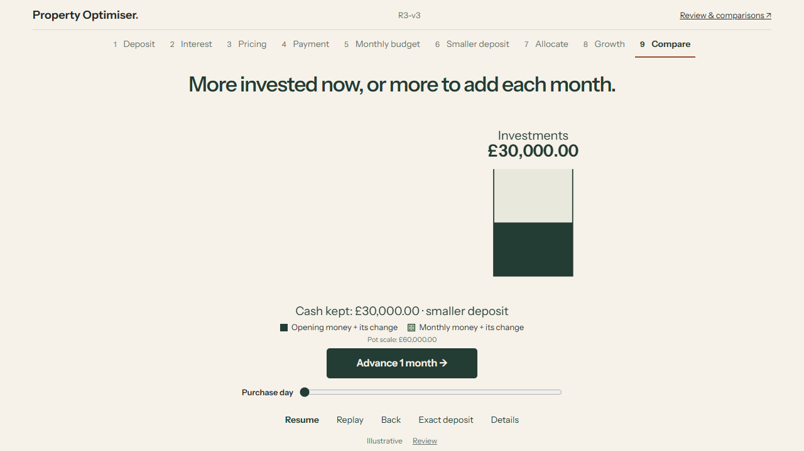

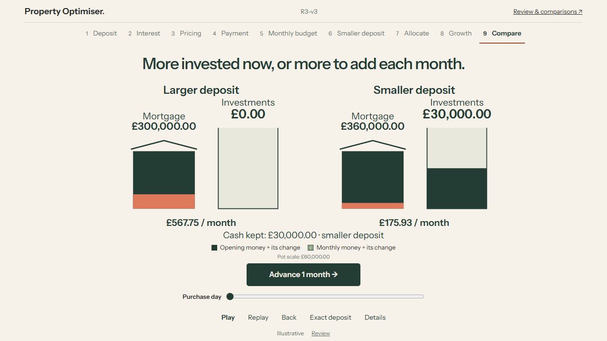

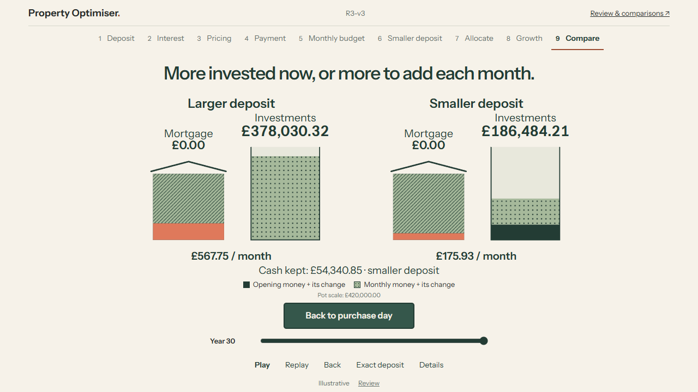

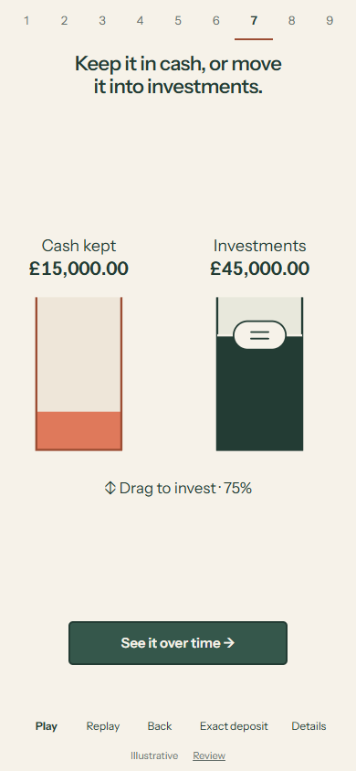

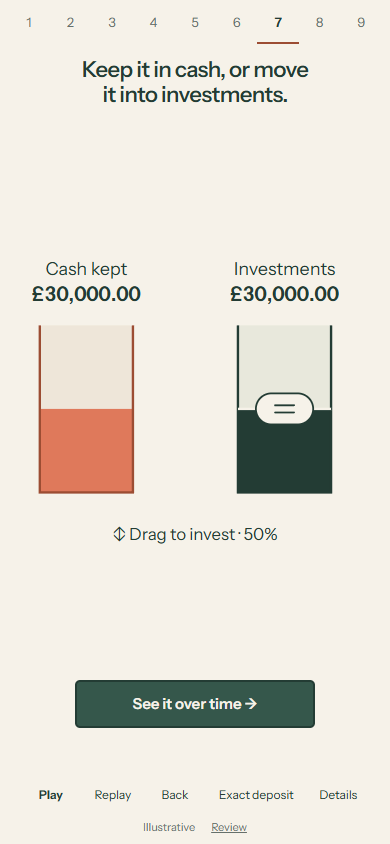

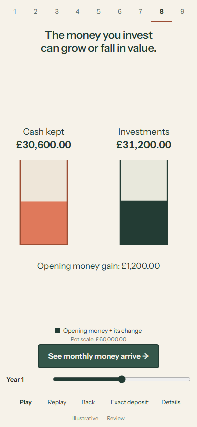

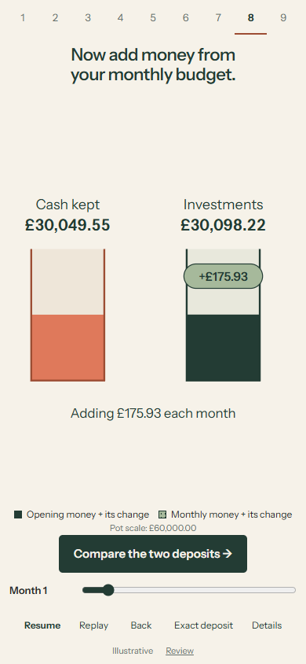

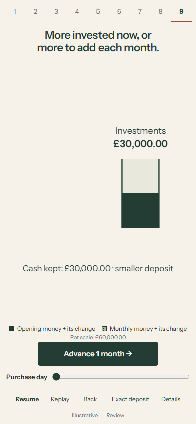

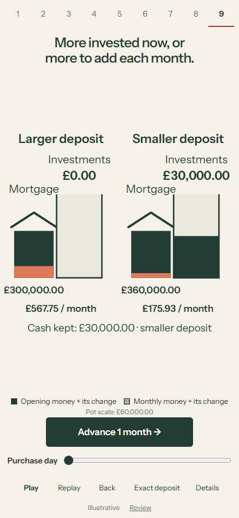

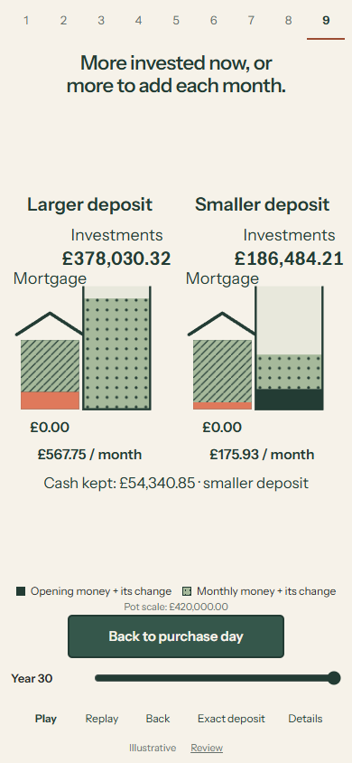
Try the boundaries
- At 7, drag the investment handle from empty to full and back. Home/End choose 0/100%; arrows move 25%. Both amounts always come from one complete fixture.
- Continue with 0% invested: the pot stays empty. A 50% example is an explicit optional action, never a silent replacement.
- At 8, follow the prominent action through a year of opening growth, then monthly additions. Pause a contribution mid-arrival. The second deposit has not appeared yet.
- Compare the deposits. Both restart explicitly at purchase so you can see the larger example's empty investment. Advance the same month, scrub to year 3 and year 30, then reverse or replay.
- Open Details for each purchase deposit, monthly repayment, cash and both investment cohorts. Return to allocation: it shows purchase-day values with a purchase-day date.
Data and visual meaning
This is the owner-authorised illustrative interface, not the production successor model. Existing mortgage/payment/cash facts remain unchanged. The browser selects immutable offline values; it does not calculate financial projections.
The fictional scenario retains a £400,000 home, £100,000 allocatable capital after separately funded costs and with essential reserves outside that amount, a 30-year mortgage and a common £2,000 monthly budget. Opening mortgage rates are 4.5% above 80% LTV and 4.0% at or below it, fixed for the term. Both choices invest all monthly capacity remaining after their own repayment at month end.
Cash assumes 2% annual effective growth. The authored investment path is +4%, -18%, -6%, then +4% annually. No tax, fees, inflation, withdrawals, rate resets or house-price appreciation. These are design assumptions, not forecasts or probabilities.
The opening-only phase excludes monthly investing until introduced. Dark and dotted investment portions include their own subsequent change in value. Both investment pots use the same linear scale; a labelled scale change happens before growth when more room is needed. Principal repayment alone replaces mortgage debt with the striped house area. House and pot scales are separate.
Fixture r3-v3-cohorts-2026-10-30-v1, effective 2026-10-30. All thirteen inherited fields remain identical across 3,300,055 rows. Decimal 50-digit work and display ROUND_HALF_UP are retained. The later cohort is independently rounded; the opening cohort is the residual of the unchanged aggregate and differs by at most one penny from independently rounded opening money. Cohort values and gains reconcile exactly, including losses. Fixture evidence · Inherited mortgage evidence.
Verification and limits
Eight Node tests and seven Python tests pass, including independent 100-digit cohort references and reconciliation of every serialized row. Author checks cover all nine lessons at 320x568, 390x664, 390x844, 1280x720 and 1440x1000, plus all lessons at 200% text size. Direct dragging, empty/full boundaries, normal/reduced motion, contribution pause, retained DOM identity, backwards navigation, delayed date responses, keyboard, native dialogs and inherited deposit interactions are checked.
Independent review found enlarged-text overlap, a missing growth action on the primary path, premature screen-reader contribution text, missing larger-choice purchase details and an allocation-date mismatch. These were reproduced and repaired with author regressions. Final author checks do not imply an independent re-review or owner visual acceptance.
story | story-lifecycle | story-transition | review-regressions | browser | touch | access | transition | capture | media | preservation | Verification summary
Five allocation settings and eleven dates keep this prototype bounded. Multi-year jumps do not render every intervening contribution; the first months explicitly demonstrate arrival. Normal-speed playback and sampled decoded frames were checked. No physical-device, Safari/Firefox, spoken screen-reader or novice comprehension campaign was performed. Financial consistency is not production-successor certification.
Source and publication
Tested source 0ff5946b82b49e7cdd3eef8f5eddbb6af73a13ae on design/m8-r3-v3, based exactly on wrapper 8c3d72b2338f6385b8863a9d8f76dbec6847409b, whose parent is tested R3-v2 231175e71cc227858537d8ba89a28ea8fa3765b2. Preserved R3-v2 assets: 0582fe35dfa1e27d67cd4d08177b454370296661.
Exact source, wrapper and publication identities · Review metadata · Asset hashes · Preserved R3-v2 record
Owner feedback
Can you use the handle, follow the forward action, and point to opening money, later money and mortgage debt without reading a table?
Published for visual feedback. No R4, production engine implementation or merge.